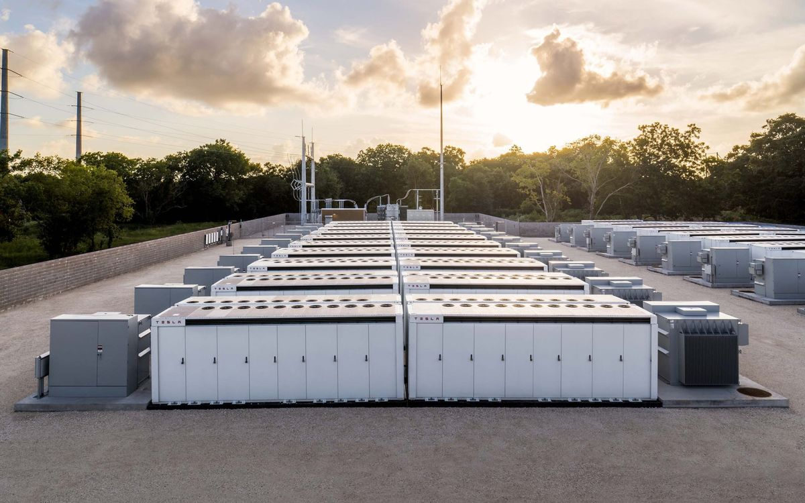
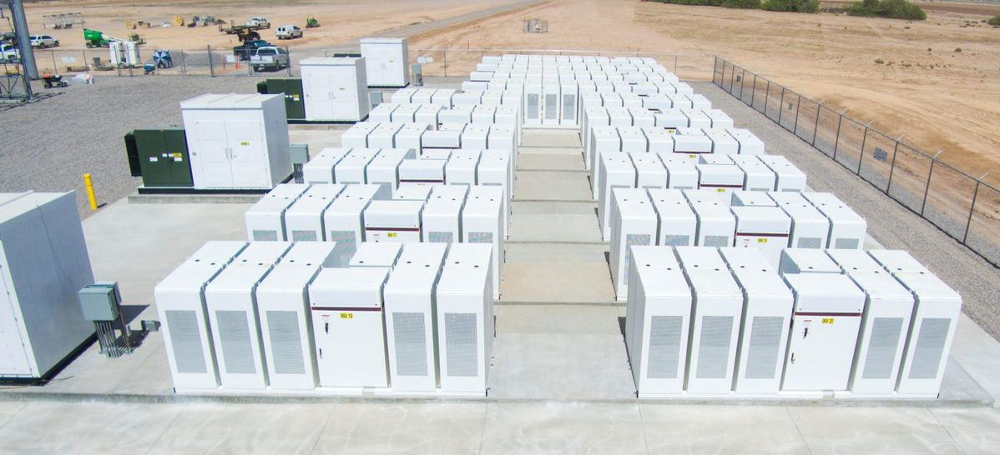
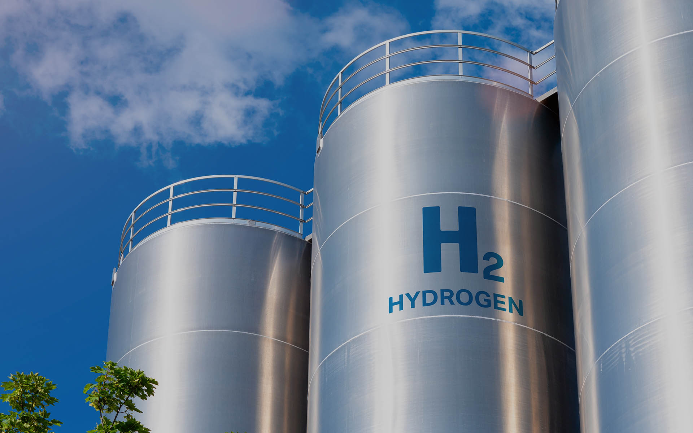
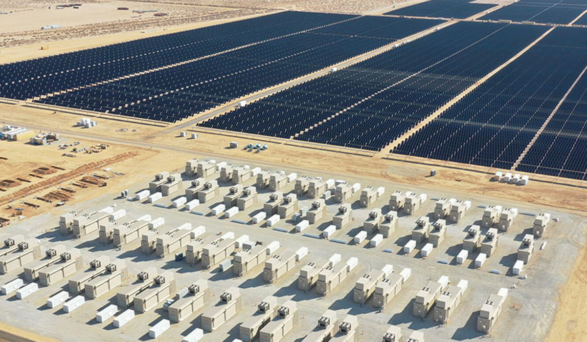
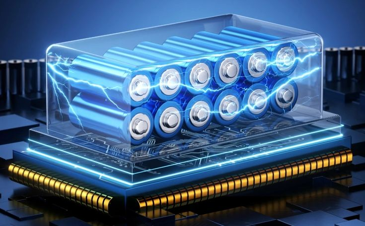
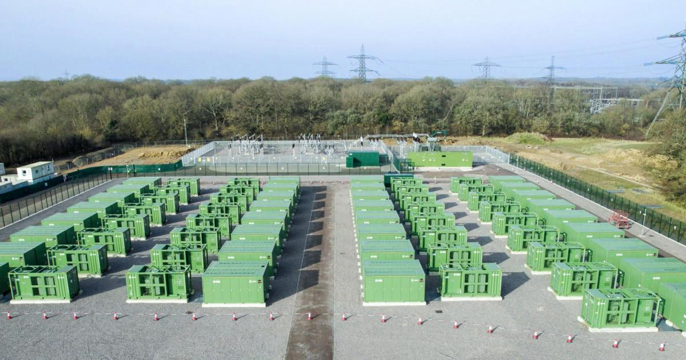

Energy Storage: Powering a Smarter Grid
Energy storage is one of the most critical and rapidly evolving technologies in the clean energy transition. As the world increasingly relies on solar and wind power — sources that generate electricity only when the sun shines or the wind blows — the ability to store that energy and use it on demand has become essential. Without storage, surplus renewable energy is wasted and grids still depend on fossil fuels to fill gaps. With it, a fully clean, reliable, and affordable energy system becomes genuinely achievable — directly supporting SDG 7's vision of sustainable energy for all.

How Energy Storage Works
Energy storage systems capture electricity when it is abundant and cheap — typically when solar or wind output is high — and release it when demand is high or generation is low. This process of charging and discharging smooths out the natural variability of renewable energy, making clean power available around the clock rather than only at certain times of day or in certain weather conditions.
The Charging and Discharging Cycle
In a lithium-ion battery, for example, charging causes lithium ions to move from the cathode to the anode through an electrolyte, storing chemical energy. When discharging, the ions flow back, releasing energy as electricity. Modern battery management systems monitor temperature, voltage, and charge levels thousands of times per second to maximise efficiency and lifespan, typically achieving round-trip efficiencies of 85–95%.
"Battery storage capacity is doubling roughly every three years. By 2030, the global installed base of grid-scale batteries is expected to reach 1,500 gigawatt-hours — enough to power the entire UK for over two weeks." — BloombergNEF, 2024

Types of Energy Storage
Energy storage is not a single technology — it encompasses a wide range of systems suited to different timescales, scales, and applications.
Lithium-Ion Batteries
The dominant technology for both grid-scale and consumer storage today. Lithium-ion batteries power everything from smartphones and laptops to electric vehicles and utility-scale storage installations. Their energy density, falling costs — down over 90% since 2010 — and rapid response time make them the go-to solution for short-duration storage of up to four hours. Tesla's Megapack and similar products are now deployed at scale across Australia, the USA, and the UK.
Pumped-Storage Hydropower
The most widely deployed form of large-scale energy storage globally, accounting for over 90% of installed storage capacity worldwide. Water is pumped uphill to a reservoir when electricity is cheap, then released through turbines when demand peaks. While geographically constrained, pumped hydro can store energy for days or weeks — far longer than batteries — making it ideal for seasonal balancing.
Hydrogen Storage
Green hydrogen — produced by using surplus renewable electricity to split water into hydrogen and oxygen via electrolysis — can be stored in tanks and converted back to electricity in fuel cells when needed. While currently less efficient than batteries, hydrogen offers the prospect of very long-duration storage across seasons, and is a promising fuel for industries that cannot easily electrify, such as shipping and heavy manufacturing.
Thermal Storage
Thermal energy storage captures heat or cold for later use. Molten salt thermal storage is used in concentrated solar power plants to store heat from the sun and generate electricity after dark. Ice storage systems in commercial buildings freeze water overnight using cheap off-peak electricity and use the ice to cool the building during the day, reducing peak demand significantly.

Benefits of Energy Storage
Energy storage delivers benefits that extend far beyond simply keeping the lights on — it transforms how entire energy systems function.
Enabling Higher Renewable Penetration
Storage is the key that unlocks 100% renewable energy grids. Without it, grids must keep fossil fuel power stations on standby to respond to sudden drops in solar or wind output. With sufficient storage, those standby plants become unnecessary — storage fills the gaps instead, displacing the last and most polluting sources of electricity generation.
Reducing Energy Bills
Households and businesses with battery storage can charge during cheap off-peak periods — including from their own solar panels — and discharge during expensive peak hours, dramatically reducing electricity bills. In countries with time-of-use tariffs, home battery owners regularly cut their bills by 40–60%. As battery prices continue to fall, this benefit is becoming accessible to a growing proportion of households.
Improving Energy Access
In remote communities without grid connections, battery storage paired with solar panels provides reliable electricity for the first time. Off-grid solar-plus-storage systems are transforming lives across sub-Saharan Africa and South Asia, powering homes, schools, health clinics, and small businesses at a fraction of the cost of diesel generators — directly advancing SDG 7's goal of universal energy access.

What Students Can Do
Energy storage might feel like an industrial-scale technology, but students have more influence over its growth than they might think.
1. Consider an EV or E-Bike
Electric vehicles are mobile batteries. As Vehicle-to-Grid (V2G) technology matures, EVs will be able to sell stored electricity back to the grid during peak hours, earning their owners money while stabilising renewable energy supply. Even choosing an e-bike over a petrol vehicle reduces demand on fossil-fuel infrastructure and supports the electrification transition.
2. Use Smart Charging and Time-of-Use Tariffs
If you charge a phone, laptop, or electric vehicle, use smart charging features to schedule charging for overnight or early morning when electricity is cheapest and the grid is greenest. Many energy providers now offer time-of-use tariffs specifically designed for EV owners and smart home users.
3. Advocate for Storage Investment
Write to your university or local council urging investment in battery storage alongside any new solar or wind installations. Many institutions install solar panels without accompanying storage, meaning surplus energy is exported at low prices rather than used on-site. Pairing the two maximises the value and impact of renewable investments.
4. Study Energy Storage Technologies
The storage sector faces an acute shortage of skilled engineers, chemists, data scientists, and policy experts. University modules in electrochemistry, power systems, and materials science all provide relevant foundations. Organisations like the Faraday Institution offer student research opportunities specifically focused on battery technology development.

The Global Picture
Global energy storage capacity has grown exponentially in recent years, reaching over 45 gigawatt-hours of installed battery storage by the end of 2023 — a tenfold increase from just five years earlier. The USA, China, and Australia are leading the deployment of grid-scale batteries, while Germany and the UK are driving growth in residential storage markets. Australia's Hornsdale Power Reserve — one of the world's largest lithium-ion battery installations — has saved electricity consumers hundreds of millions of dollars by stabilising the grid and reducing the need for expensive fossil fuel peaker plants.
The International Energy Agency estimates that the world needs to deploy 50 times more battery storage by 2030 than exists today in order to meet global climate and energy access targets. This represents one of the largest industrial scale-ups in history — and one of the greatest economic opportunities of the coming decade. With battery costs expected to fall a further 40–50% by 2030, energy storage is transitioning from a niche technology to a fundamental pillar of the global energy system, enabling the clean, reliable, and affordable future that SDG 7 envisions.

References
- BloombergNEF (2024) Energy Storage Market Outlook 2024. Available at: https://about.bnef.com/ (Accessed: 24 Mar 2026).
- International Energy Agency (2023) Battery Storage. Available at: https://www.iea.org/energy-system/electricity/battery-storage (Accessed: 24 Mar 2026).
- Faraday Institution (2024) Battery Research. Available at: https://faraday.ac.uk/ (Accessed: 25 Mar 2026).
- United Nations (2023) SDG 7 — Affordable and Clean Energy. Available at: https://sdgs.un.org/goals/goal7 (Accessed: 20 Mar 2026).
- Energy Saving Trust (2024) Home Battery Storage. Available at: https://energysavingtrust.org.uk/ (Accessed: 25 Mar 2026).